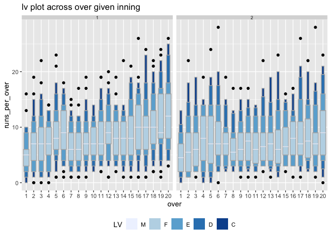

Overview
Package gravitas provides a tool to examine the probability distribution of univariate time series across bivariate temporal granularities using a range of graphics in ggplot2 through the following:
create multiple-order-up circular or aperiodic temporal granularities.
categorize pairs of granularities as either harmony or clash, where harmonies are pairs of granularities that aid exploratory data analysis, and clashes are pairs that are incompatible with each other for exploratory analysis.
recommending appropriate probability distribution plots of the time series variable across the bivariate granularities based on the levels of the bivariate granularities and their interaction.
gravitas is not restricted to temporal data. It can be utilized in non-temporal cases for which a hierarchical structure can be construed similar to time. The hierarchical structure of time creates a natural nested ordering. For example, hours are nested within days, days within weeks, weeks within months, and so on. Similarly, if a periodic nesting exists for a non-temporal application, gravitas can be used to explore the probability distribution of a continuous random variable.
Installation
You can install gravitas from CRAN:
You can install the development version from GitHub with:
Quick look
gravitas comes with an interactive webpage, which lets you go through the different functionalities of this package. To try it, simply use gravitas::run_app().
Features
Search for a set of all possible temporal granularities with
search_gran()Build any temporal granularity with
create_gran()Check if two temporal granularities are harmonies with
is_harmony()Get all possible harmonies with
harmony()Get recommendations on choosing more appropriate distribution plots and advice on the interaction between granularities, number of observations available for drawing probability distributions for chosen granularities with
gran_advice()Validate if the created granularity matches your already existing column with
validate_gran()Explore probability distribution across bivariate temporal granularities with
prob_plot()
Example: temporal case
The probability distribution of energy consumption for ten households from customer trials can be explored as follows:
Search for granularities
library(gravitas)
library(dplyr)
#> Warning: package 'dplyr' was built under R version 3.5.2
library(ggplot2)
#> Warning: package 'ggplot2' was built under R version 3.5.2
library(lvplot)
smart_meter10 %>%
search_gran(highest_unit = "week")
#> [1] "hhour_hour" "hhour_day" "hhour_week" "hour_day" "hour_week"
#> [6] "day_week"Screen harmonies from the search list
smart_meter10 %>%
harmony(
ugran = "day",
filter_in = "wknd_wday"
)
#> # A tibble: 7 x 4
#> facet_variable x_variable facet_levels x_levels
#> <chr> <chr> <int> <int>
#> 1 hour_day hhour_hour 24 2
#> 2 wknd_wday hhour_hour 2 2
#> 3 wknd_wday hhour_day 2 48
#> 4 hhour_hour hour_day 2 24
#> 5 wknd_wday hour_day 2 24
#> 6 hhour_hour wknd_wday 2 2
#> 7 hour_day wknd_wday 24 2Visualize probability distribution of the harmony pair (wknd_wday, hour_day)
Box plots are drawn across hours of the day faceted by weekend/weekday for a household in the data smart_meter10 in the package. It is interesting to see the difference in energy consumption in the early morning hours (1 am - 7 am) for weekdays and weekends. The interquartile range is the same in these hours, however, median energy consumption for these hours is higher for weekends compared to weekdays. The distribution for the rest of the day is not significantly different for weekdays and weekends, implying their energy behavior after 7 am remains more or less similar.
smart_meter10 %>%
filter(customer_id == 10017936) %>%
prob_plot(
gran1 = "wknd_wday",
gran2 = "hour_day",
response = "general_supply_kwh",
plot_type = "boxplot") +
scale_y_sqrt() + scale_x_discrete(breaks = seq(0, 23, 3))
Example: non-temporal case
cricket data set in the package can be explored by explicitly defining a hierarchy table as follows:
Visualize granularities for non-temporal data
Each inning of the match is plotted across facets and overs of the innings are plotted across the x-axis. It can be observed from the letter value plot that there is no clear upward shift in runs in the second innings as compared to the first innings. The variability in runs increases as the teams approach towards the end of the innings, as observed through the longer and more distinct letter values.
library(tsibble)
#> Warning: package 'tsibble' was built under R version 3.5.2
#>
#> Attaching package: 'tsibble'
#> The following object is masked from 'package:dplyr':
#>
#> id
cricket_tsibble <- cricket %>%
mutate(data_index = row_number()) %>%
as_tsibble(index = data_index)
hierarchy_model <- tibble::tibble(
units = c("index", "ball", "over", "inning", "match"),
convert_fct = c(1, 6, 20, 2, 1)
)
cricket_tsibble %>%
create_gran(
"over_inning",
hierarchy_model
)
#> # A tsibble: 8,560 x 12 [1]
#> season match_id batting_team bowling_team inning over wicket dot_balls
#> <dbl> <dbl> <chr> <chr> <dbl> <dbl> <dbl> <dbl>
#> 1 2008 2 Chennai Sup… Kings XI Pu… 1 1 0 4
#> 2 2008 2 Chennai Sup… Kings XI Pu… 1 2 0 2
#> 3 2008 2 Chennai Sup… Kings XI Pu… 1 3 1 4
#> 4 2008 2 Chennai Sup… Kings XI Pu… 1 4 0 3
#> 5 2008 2 Chennai Sup… Kings XI Pu… 1 5 0 3
#> 6 2008 2 Chennai Sup… Kings XI Pu… 1 6 0 3
#> 7 2008 2 Chennai Sup… Kings XI Pu… 1 7 1 1
#> 8 2008 2 Chennai Sup… Kings XI Pu… 1 8 1 3
#> 9 2008 2 Chennai Sup… Kings XI Pu… 1 9 0 1
#> 10 2008 2 Chennai Sup… Kings XI Pu… 1 10 0 2
#> # … with 8,550 more rows, and 4 more variables: runs_per_over <dbl>,
#> # run_rate <dbl>, data_index <int>, over_inning <fct>
cricket_tsibble %>%
filter(batting_team %in% c("Mumbai Indians",
"Chennai Super Kings"))%>%
prob_plot("inning", "over",
hierarchy_model,
response = "runs_per_over",
plot_type = "lv")
More information
View the vignette to get started!
This package takes tsibble as the data input. Tsibble provides a data class of tbl_ts to represent tidy temporal data. It consists of a time index, key and other measured variables in a data-centric format, which makes it easier to work with temporal data. To learn more about it, please visit https://tsibble.tidyverts.org/
Acknowledgements
Thanks to PhD supervisors Prof. Rob J Hyndman, Prof. Dianne Cook and Google Summer of Code 2019 mentor Prof. Antony Unwin for their support and always leading by example. The fine balance of encouraging me to work on my ideas and stepping in to help when I need has made the development of this package a great learning experience for me.
Moreover, I want to thank my cohort at NUMBATS, Monash University, especially Mitchell O’Hara-Wild and Nicholas Spyrison for always lending an ear and sharing their wisdom and experience of developing R packages, with such kindness.
Reporting and issues
Please submit all bug reports, errors, and feature requests to https://github.com/Sayani07/gravitas/issues